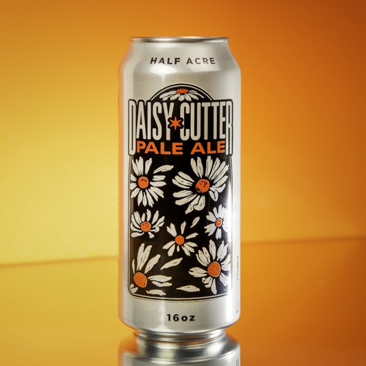

Daisy Cutter
5.2%Daisy Cutter is one of the first beers we brewed at our Lincoln Ave brewery. It began as a special release bomber and caught fire. Back in 2009, there were some local pale ales that hit with natural power. But not many. Daisy Cutter’s lush and dank characteristics carved out a place within the Chicago brewing landscape. Today, Daisy Cutter is a call brand that we continue to keep raw and relevant. Blended pine, citrus, papaya and mango. Dank. Apparent biscuit, lingering, obscenely dry.